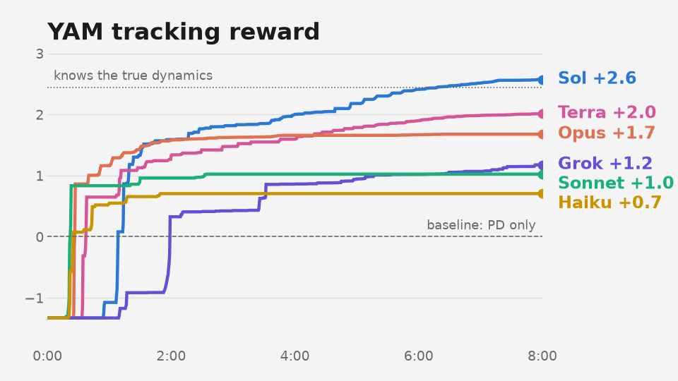

DRAFT, not published.
I gave agents a socket to a simulated YAM arm whose masses, inertias, friction and motor constants were all hidden, and 8 minutes to make it follow 14 trajectories as closely as they could. Sol (gpt-6.1-sol) got the gripper to within 0.10 mm on average, closer than a controller that knows the true dynamics (0.13 mm). It did that by learning a correction for each trajectory, not a better model. The Claude models stopped well before their time was up.
8 s of a real YAM right arm's motion in production, replayed on the hidden arm. Left: PD control only (33.9 mm over the full 12 s). Right: Sol's best attempt (0.09 mm). The red ring is where the tool point should be, the blue disk is where it is. The strip below plots each one's tool-point error as it happens, on a log scale: over the full 12 s Sol is about 370× closer.
The environment
The arm is a MuJoCo YAM with its real kinematic chain. Each run gets its own robot: link masses, centres of mass, inertias, link lengths, rotor inertia, joint friction and motor torque constants are all drawn away from the nominal model the agent is given, which has no friction at all. The agent reaches the arm only through a Unix socket. It is lockstep, so the arm advances one 1/30 s frame only when stepped, and each connection gets its own copy of the arm, so experiments can run in parallel. Each joint's drive runs a 1500 Hz PD loop plus feedforward torque, with capped gains and torques.
Error is the RMS distance, in mm, of three points on the gripper from where the reference puts them, measured at 1500 Hz. The 14 references are built to stress one part of the dynamics each (gravity, friction, inertia, Coriolis), plus six 12 s windows of a real YAM right arm working in production. An agent's score is the mean over references of its best finished attempt. Unfinished references count as the arm left limp.
The prompt
Each agent ran headless with one instruction, Read PROMPT.md in the current directory and do what it says. This is that file, word for word:
# Make a YAM arm follow these trajectories as closely as you can
There is a YAM 6-DOF arm (gripper fixed shut). It is the same arm as in `tools/yam_nominal.xml`, but that file is
only nominal: the real arm's link masses, centres of mass, inertias, link lengths, rotor inertias, joint friction
and motor torque constants all differ from it, by amounts nobody has told you. The file has no friction at all.
There is no gravity compensation anywhere: if you do not hold the arm up, it falls.
## The arm
You reach the real arm only through the Unix socket `/sim/sim.sock` (stream, one JSON object per line each way;
`tools/arm.py` is a small client for it). It runs in lockstep: it advances only when you step it, one frame of
1/30 s at a time, so you can take as long as you like to think between frames. Every connection gets its own copy
of the same arm, so you can run experiments, and trials, in parallel.
On connect you receive `{"type":"hello", ...}` with the joint limits, gain limits, torque limits and the names of
the references you can run. Then send:
- `{"type":"reset","q":[6]}` places the arm at rest at those joint angles (rad). Reply: an observation.
- `{"type":"step","q":[6],"qd":[6],"kp":[6],"kd":[6],"tau":[6],"n":1}` holds this drive command for `n` frames
(1 to 300). Omitted `qd`, `kp`, `kd`, `tau` are zero. Reply: `{"type":"obs","t","q","qd","tau"}` for n = 1,
or `{"type":"obs_batch","frames":[...]}` with one observation per frame.
- `{"type":"trial","name":...}` starts a scored run of a reference (below).
- `{"type":"status"}` lists every trial finished so far on this arm, from any connection.
An observation is taken at the end of each frame: `q` joint angles (rad), `qd` joint speeds (rad/s), `tau` the
torque each drive commanded (Nm). All three are noisy. A bad request gets `{"type":"error","msg":...}`.
**The drives.** Each joint has a motor drive that runs its own loop at 1500 Hz. During a frame it applies
tau_motor = clip( kp*(q + qd*s - q_meas) + kd*(qd - qd_meas) + tau , -tau_max, +tau_max )
where `s` is the time since the frame began (0 to 1/30 s): the position setpoint moves at `qd` within the frame.
`kp` is capped at [120, 120, 120, 60, 15, 15], `kd` at [7.5, 7.5, 7.5, 2.25, 2.25, 2.25] (higher values are clipped), and `tau_max` is [28, 28, 28, 10, 10, 10] Nm.
The torque a motor actually delivers is not exactly `tau_motor`. Joint ranges are hard stops.
## References and trials
A reference is 12 s of joint angles, given as a JSON dict of arrays sampled at the frame times 0, 1/30, ..., 12 s:
`t` (N+1,), `q`, `qd`, `qdd` (N+1, 6). The reference itself is smooth between those samples.
`{"type":"trial","name":...}` places the arm at rest at the reference's first sample and replies
`{"type":"trial_start","name","n_frames","ref","obs"}`. Step it one frame at a time (n = 1) through all
`n_frames`; each reply carries `"frame"`, and after the last one you also get
`{"type":"trial_result","rms_mm",...}`. Sending reset or another trial abandons the trial unscored.
**Error is in millimetres.** Three points fixed to the gripper are tracked: the wrist centre on joint 6's axis,
the tool point 11.5 cm out along it, and a point 6 cm off that axis (so wrist roll counts). A trial's error is the
RMS distance of those points from where the reference puts them, on the real arm's own geometry, at 1500 Hz over
the whole 12 s, so what happens inside a frame counts. Lower is better.
The references come in these kinds: `gravity_*` (slow moves and holds across the workspace), `friction_*` (slow
reversals, tiny dithers, constant-speed plateaus), `inertia_*` (quick short moves of the shoulder/elbow or of the
wrist), `coriolis_*` (fast base swings with the arm stretched out) and `recorded_*` (12 s windows of a real YAM
right arm's motion in production, up to about 6 rad/s and 50 rad/s^2 on the wrist).
## Your task
`references/` holds the 14 references you are scored on, one JSON file each; they are also the trial names.
**Score: for each reference, the lowest `rms_mm` of any trial of it that you finish; the final score is the mean
of those over all 14 references.** A reference you never finish a trial of counts as the arm left limp, which is
hundreds of mm. You may run each trial as often as you like, from as many connections at once as you like, and use
reset/step between trials to study the arm. Only finished trials count, and only those finished within your time.
Keep the scripts you write in this directory (not /tmp), so what you did can be read afterwards.
You have 8 minutes of wall-clock time. Finish a trial of every reference early, then improve them.
Results
Two robots per model, 8 minutes each. Reward is log10(PD-only error / score) per robot, averaged, so 0 is plain PD control and each +1 is 10× more accurate.
| Model | Robot 1 mm | Robot 2 mm | Reward | Time used | Trials |
|---|
| Sol (gpt-6.1-sol) | 0.10 | 0.12 | +2.6 | 8 / 8 min | 484 / 500 |
| Terra (gpt-6.1-terra) | 0.47 | 0.33 | +2.0 | 8 / 8 min | 559 / 431 |
| Opus 5.5 | 0.42 | 1.78 | +1.7 | 4.7 / 6.6 min | 272 / 406 |
| Grok 4.7 | 1.90 | 2.22 | +1.3 | 8 / 8 min | 450 / 259 |
| Sonnet 5.5 | 4.50 | 3.36 | +1.0 | 0.5 / 2.7 min | 14 / 126 |
| Haiku 5.5 | 16.27 | 4.02 | +0.7 | 1.2 / 2.3 min | 56 / 112 |
| Fixed controllers, for reference |
| PD only, no feedforward | 35.97 | 46.85 | 0 | | |
| Nominal-model feedforward | 4.31 | 7.47 | +0.9 | | |
| True dynamics (oracle) | 0.13 | 0.16 | +2.5 | | |
Reward over time

Each line is the mean of a model's two robots, scored as it stood at each moment. Sol, Terra and Grok kept improving until the deadline; Opus, Sonnet and Haiku stopped early and stayed flat.
What the models did
- Sol computed nominal inverse-dynamics feedforward for every reference, ran all 14 at once on separate connections, then corrected each reference's torque sequence again and again from its last attempt's error. That is iterative learning control. It ran about 35 attempts per reference, lowering the learning rate and the noise in its error estimate until time ran out.
- Opus did the same thing (nominal feedforward, then learning control) and reached 0.42 mm on one robot, but ended its runs after 4.7 and 6.6 of its 8 minutes.
- Terra kept running trials until the deadline (559 and 431 of them) and ended about 4× behind Sol.
- Sonnet's first run made one pass with nominal-model feedforward, reported 4.4 mm and stopped after 27 seconds: "I made one pass and did not tune it."
- Haiku's first run used no model, just PD plus an integral term it tuned by sweeping, and got 16.3 mm. It said it stopped "at the 8-minute budget" after 69 seconds.
Beating the oracle is not a contradiction. The oracle knows the dynamics but still runs a fixed, one-pass controller. Seeing the actual trajectories and being allowed to retry lets a learning loop cancel what any one-pass controller leaves behind.
Caveats
- Two robots per model, one run each. The ordering of Sonnet, Haiku and Grok could change with more runs.
- This version rewards learning on the exact trajectories you are scored on. A second version holds the test trajectories out and scores a controller the agent leaves behind; that sweep is incomplete (Sol 0.20 mm, Terra 0.42, Opus 1.18 and 2.07, Grok 1.68, Haiku 2.79 and 5.54, Sonnet 3.19 and 5.80, with the second robot missing for Sol, Terra and Grok).
- The arm is simulated. The meshes are the real YAM Pro CAD, but they are drawn on the task's chain, whose link offsets differ from the CAD by up to about 1 cm.